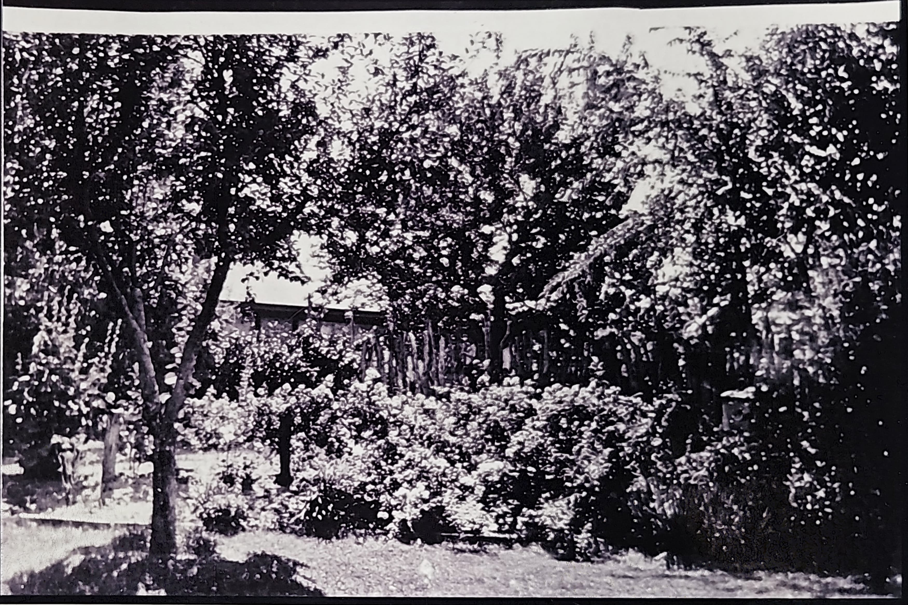
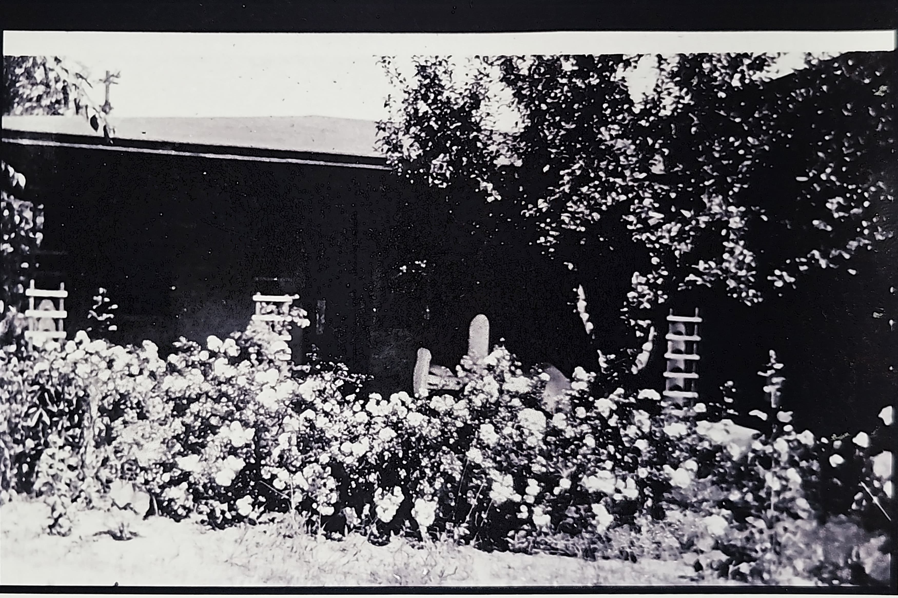
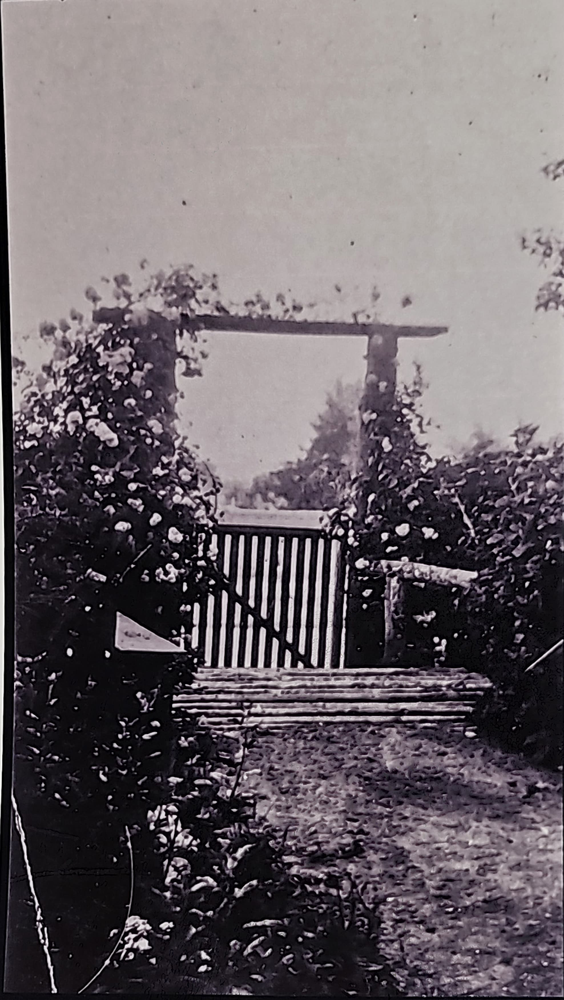
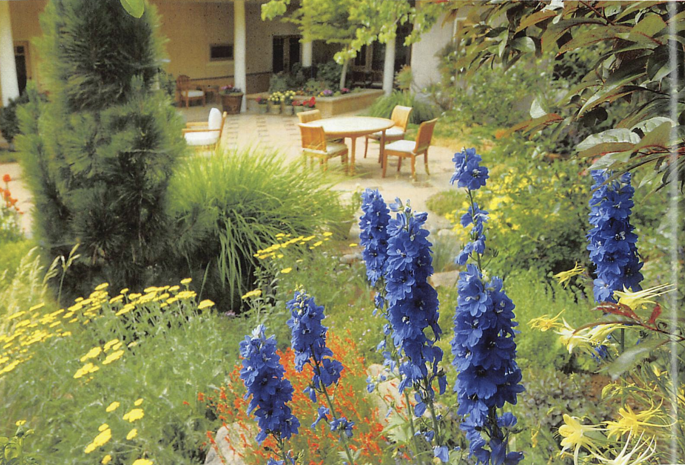
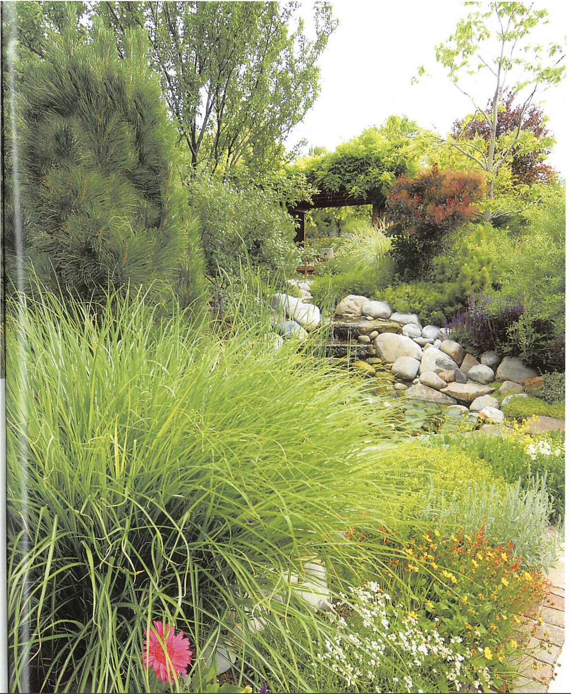
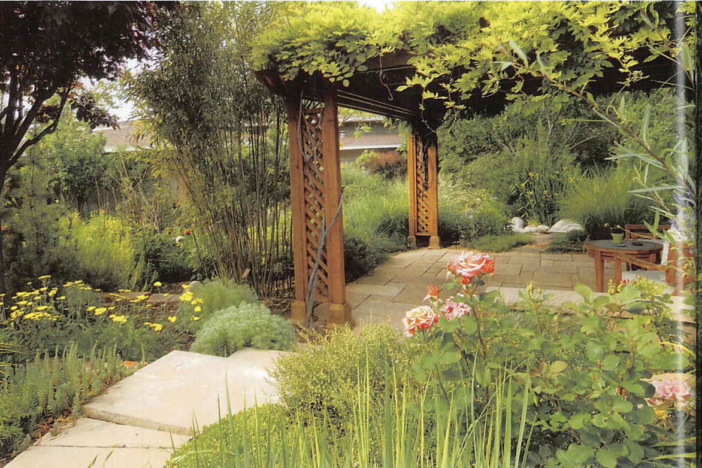

From Cross Orchard agricultural roots to Charlotte Wilson's pioneering high-desert horticulture—125+ years of landscape innovation at 316 East Buena Vista Street.
Charlotte Wilson's gardens were considered among the finest in Santa Fe during the 1920s-1940s, pioneering sustainable water management in the high desert. Her terraced design maximized water efficiency while creating distinct microclimates for different plant varieties.
The innovative sluiceway irrigation system directed water from the property's pre-basin well through carefully designed channels, allowing Charlotte to control water flow to different garden areas based on seasonal needs and plant requirements.
The property's well originally served the Cross Orchard, one of Santa Fe's significant agricultural operations. Charlotte adapted this agricultural infrastructure for sophisticated residential landscaping.
Multiple terraced levels created optimal growing conditions for diverse plantings while managing water runoff and erosion control - essential in Santa Fe's challenging climate.
The Wilson gardens served as a venue for Santa Fe's cultural community, hosting garden parties and serving as a model for other high-desert landscaping projects throughout the region.
125+ years of landscape development and horticultural innovation
Property served as part of larger agricultural operation with hand-dug well and basic irrigation infrastructure. Original fruit trees planted, establishing the foundation for future landscaping efforts.
Sophisticated terraced garden design implemented with innovative sluiceway irrigation. Diverse plantings including fruit trees, vegetables, cutting gardens, and native plants. Gardens gained regional recognition for beauty and water efficiency.
Following Charlotte Wilson's death (1954), gardens maintained by subsequent owners but with reduced complexity. Core fruit trees and infrastructure preserved while ornamental plantings simplified.
During rental property years, gardens experienced significant neglect. Irrigation systems fell into disrepair, ornamental plantings were lost, though mature fruit trees survived with minimal care.
David Kent & Margaret Love restored basic garden functionality, rediscovered historic well system producing 15-20 GPM, and installed modern irrigation controllers while respecting historic layout principles.
Aaron Micheal Waldron & Chantal Marie-Claude Waldron fully restored the garden, built the greenhouse, reestablished the kitchen garden. Home and garden are featured in magazine and garden walks.
Current restoration project aims to recreate Charlotte Wilson's terraced design using sustainable modern techniques while preserving historic plant materials and water-efficient irrigation principles.
Photographic evidence spanning over a century of garden evolution






Video documentation of the garden landscape and restoration work